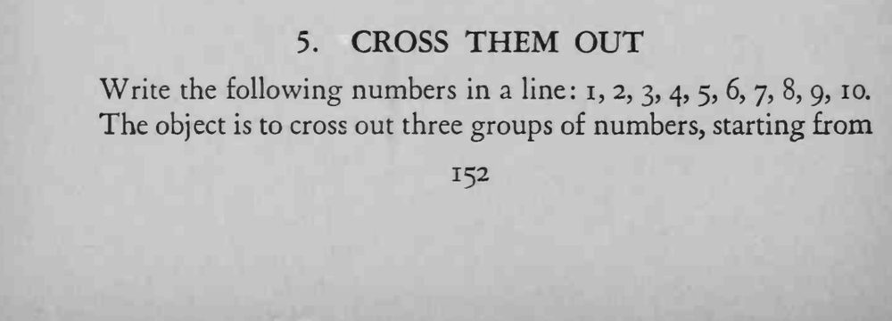
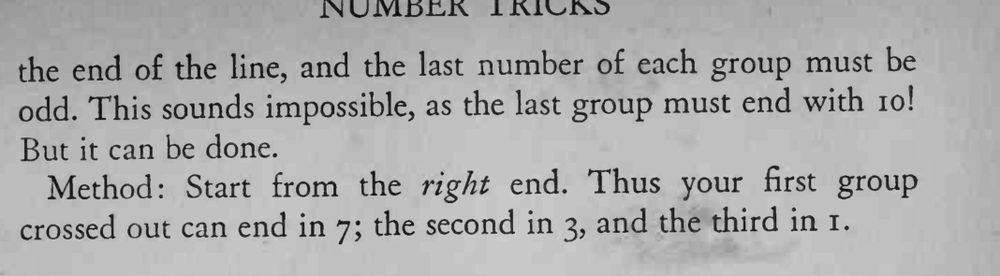

把 1 到 10 排成一行，要求从末尾开始划掉三组数字，且每组最后一个都是奇数——看似绝不可能。
关键是别按观众预想的分法分组，7、3、1 都可以做每组的结尾。


Write the following numbers in a line: 1, 2, 3, 4, 5, 6, 7, 8, 9, 10. The object is to cross out three groups of numbers, starting from the end o£ the line, and the last number of each group must be odd. This sounds impossible, as the last group must end with 10! But it can be done. Method: Start from the right end. Thus your first group crossed out can end in 7; the second in 3, and the third in 1.